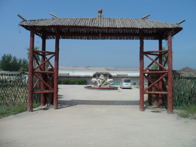

旅游项目

本公司位于济阳县仁风镇杨家村村西700米处，南临黄河大堤200米。周围无噪音、无灰尘污染，环境静谧，是一家集住宿餐饮、休闲采摘、垂钓娱乐为一体的综合服务场所。
我公司建有设施齐全的民宿、高标准生态餐厅、鲜食葡萄采摘园、休闲垂钓中心。其中生态餐厅总投资180余万元，总面积7.9亩，外植垂柳、法桐、紫花槐；内植四季常绿花木，走进餐厅附近仿佛走进了丛林之中。葡萄采摘园占地83亩，引进种植的无核富硒红宝石葡萄品种，口感好，营养丰富，是馈赠亲友的佳品。游客可到葡萄园亲自采摘，体味劳动的快乐。休闲垂钓中心水面60余亩，多年来自然繁殖的黄河鲤鱼、鲫鱼、草鱼、小白鲢，吸引了众多的垂钓爱好者。游客也可以自钓自食，餐厅随时为游客提供烹饪服务。
圣玺乡村旅游发展有限公司引进健康饮食，注重农家风味，营造民宿田园风光，让游客体验回归大自然的感觉。全体员工将为你提供优质的服务，让您尽享农家的朴实之美。